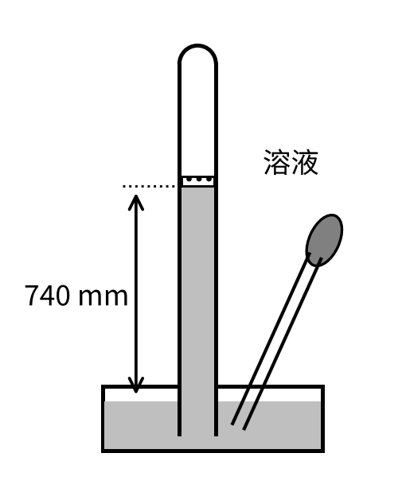
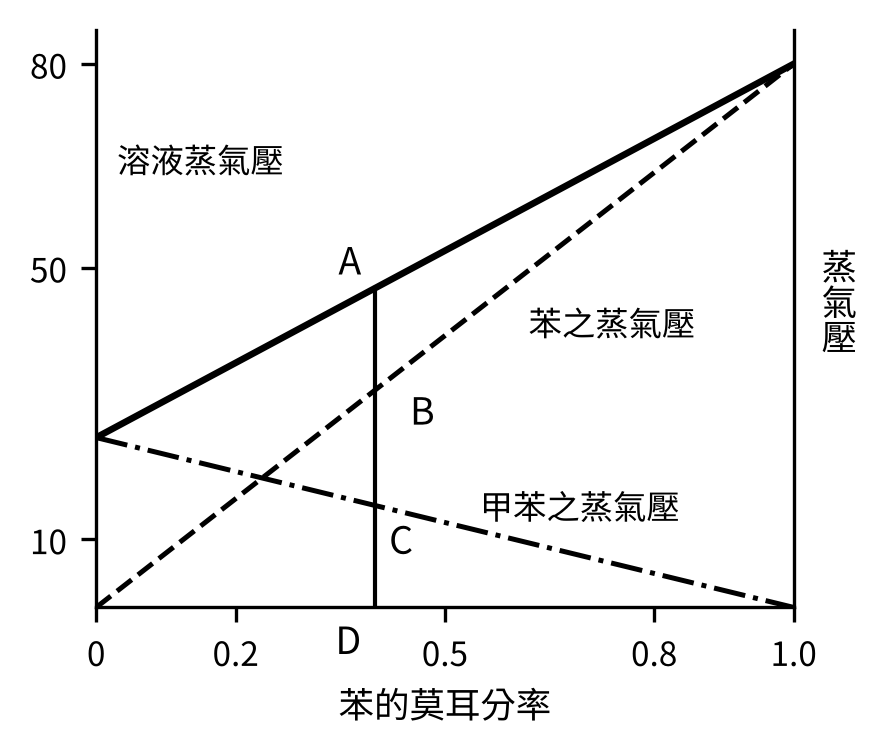
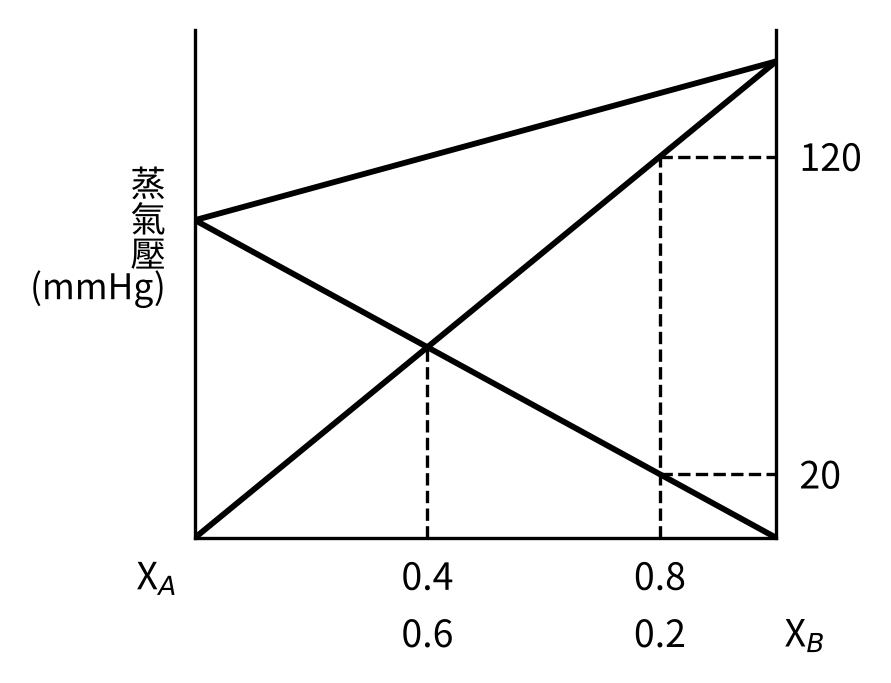
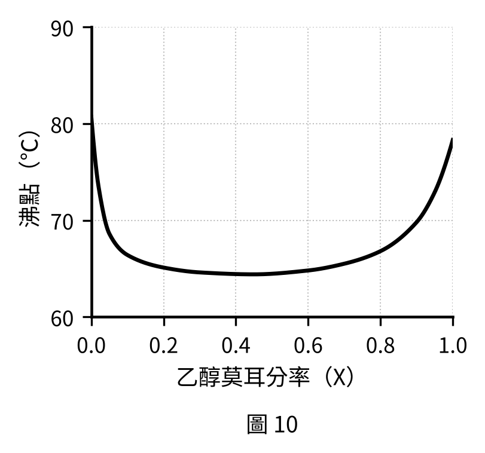

基礎題
下列有關非揮發性非電解質溶液之蒸氣壓的敘述，何項錯誤？
- (A) 隨溫度的升高而增大
- (B) 較純溶劑為低
- (C) 濃度愈大，其蒸氣壓愈低
- (D) 濃度愈小，其蒸氣壓降低之量愈大
看答案與詳解
答案：(D)
(A) ✔ 溫度升高，P° 增大，溶液蒸氣壓也增大。
(B) ✔ X溶劑＜1，蒸氣壓比純溶劑低。
(C) ✔ 濃度大 → X溶劑 小 → 蒸氣壓低。
(D) ✘ 濃度愈小，X溶質 愈小，蒸氣壓下降量愈「小」。
有關拉午耳定律的下列敘述，何項正確？
- (A) 在定溫下，稀溶液蒸氣壓降低量與重量莫耳濃度成正比
- (B) 在定溫下，稀溶液之蒸氣壓與溶質莫耳分率成正比
- (C) 溶液愈濃愈接近理想溶液
- (D) 稀溶液沸點上升度數與容積莫耳濃度成正比
看答案與詳解
答案：(A)
(B) ✘ 蒸氣壓與「溶劑」的莫耳分率成正比。
(C) ✘ 溶液愈稀愈接近理想溶液。
(D) ✘ ΔTb＝KbCm，與「重量」莫耳濃度成正比。
下列何項措施，使蒸氣壓變小？（多選）
- (A) 水中加入乙醇
- (B) 水中加入NaCl
- (C) 將水溫降低
- (D) 水中加入木炭
- (E) 水中加入蔗糖
看答案與詳解
答案：(B)(C)(E)
(B) ✔ 非揮發性溶質，蒸氣壓下降。
(C) ✔ 溫度降低，蒸氣壓變小。
(D) ✘ 木炭不溶於水，不形成溶液，蒸氣壓不變。
(E) ✔ 非揮發性溶質，蒸氣壓下降。
同溫時，一杯葡萄糖水溶液及一杯蔗糖水溶液共置於一密閉容器中，當達成蒸氣壓平衡時，兩杯溶液的莫耳分率相同，則兩杯水溶液的何種濃度也相等？
- (A) 體積莫耳濃度
- (B) 重量百分率濃度
- (C) 重量莫耳濃度
- (D) 體積百分率濃度
- (E) 百萬分點濃度（ppm）
看答案與詳解
答案：(C)
葡萄糖與蔗糖分子量不同，重量百分率不會相等；體積莫耳濃度與溶液體積（密度）有關，也不一定相等；ppm 為質量比，與分子量有關，也不相等。選 (C)。
有關理想溶液的敘述，哪些正確？（多選）
- (A) 理想溶液形成時符合理想氣體方程式
- (B) 理想溶液形成時，體積有加成性
- (C) 理想溶液中溶質與溶劑間無作用力
- (D) 溶液的濃度愈小，愈接近理想溶液
- (E) 溶質分子為一質點，其本身不占有體積
看答案與詳解
答案：(B)(D)
(B) ✔ ΔV＝0（且 ΔH＝0）。
(C) ✘ 溶質－溶劑間有作用力，只是與溶質－溶質、溶劑－溶劑間的作用力相同。
(D) ✔ 稀薄溶液較接近理想溶液。
(E) ✘ 這是理想氣體的假設。
假設苯和甲苯互溶形成理想溶液，在25℃時，苯的蒸氣壓為 a 毫米汞柱，甲苯的蒸氣壓為 b 毫米汞柱。下列敘述何者為正確？
- (A) b＞a
- (B) 當溶液中苯的莫耳分率為0.5時，溶液的蒸氣壓為 (a＋b)／2
- (C) 苯和甲苯混合互溶的過程為放熱反應
- (D) 苯和甲苯之分子間沒有作用力
看答案與詳解
答案：(B)
(B) ✔ P＝0.5a＋0.5b＝(a＋b)／2。
(C) ✘ 理想溶液混合時 ΔH＝0，不放熱也不吸熱。
(D) ✘ 有作用力（分散力），只是混合前後相同。
在25℃時，純水的蒸氣壓為23.8 mmHg，試求18.0克尿素〔CO(NH2)2〕溶於54.0克純水後，尿素水溶液的蒸氣壓。
答：
看答案與詳解
答案：21.6 mmHg
X水＝3.0／3.3＝0.909
P＝23.8 × 0.909≒21.6 mmHg
已知30℃時，純水的蒸氣壓為31.82 mmHg，試計算在30℃時，2.0 m 糖水溶液的蒸氣壓。（假設此溶液為理想溶液）
答：
看答案與詳解
答案：30.7 mmHg
X水＝55.6／57.6≒0.965
P＝31.82 × 0.965≒30.7 mmHg
已知20℃時酒精之飽和蒸氣壓為44 mmHg，水之飽和蒸氣壓為18 mmHg，則46％（重量百分率）之酒精溶液作為理想溶液，在20℃時之飽和蒸氣壓為若干 mmHg？
- (A) 43.5
- (B) 36
- (C) 27.5
- (D) 24.5
看答案與詳解
答案：(D)
兩者都揮發：P＝44 × 0.25＋18 × 0.75＝11＋13.5＝24.5 mmHg，選 (D)。
50℃時正辛烷和正戊烷之飽和蒸氣壓分別為140 mmHg及420 mmHg，試預測兩種液體的混合溶液（正戊烷之莫耳分率0.400）在50℃達平衡時，其蒸氣組成中含正戊烷之莫耳分率
- (A) 0.333
- (B) 0.400
- (C) 0.600
- (D) 0.667
- (E) 0.750
看答案與詳解
答案：(D)
蒸氣中 X戊烷＝168／(168＋84)≒0.667，選 (D)。
（易揮發的戊烷在蒸氣中的比例高於溶液中的 0.400）
溶液中含有兩種易於揮發的成分 a、b，其莫耳分率分別為 Xa、Xb，又知 a 成分比 b 成分的揮發性大。今將該溶液蒸餾，第一次蒸餾所得之冷凝液，其組成之莫耳分率為 Ya、Yb，若將該冷凝液再次蒸餾，所得之冷凝液之組成之莫耳分率為 Za、Zb，則下列關係何者正確？
- (A) Xa＞Ya＞Za 且 Xb＞Yb＞Zb
- (B) Xa＞Ya＞Za 且 Xb＜Yb＜Zb
- (C) Xb＞Yb＞Zb 且 Xa＜Ya＜Za
- (D) Yb＞Xb＞Zb 且 Ya＞Za＞Xa
- (E) Xa＝Ya＝Za 且 Xb＝Yb＝Zb
看答案與詳解
答案：(C)
每蒸餾（汽化→冷凝）一次，a 的比例就提高一次：Xa＜Ya＜Za；
相對地 b 的比例逐次降低：Xb＞Yb＞Zb（分餾原理）。選 (C)。
若庚烷和辛烷相混成理想溶液，在一溶液中含有1.0 mol庚烷及4.0 mol辛烷。已知在40℃時，庚烷蒸氣壓為92 mmHg，辛烷蒸氣壓為32 mmHg，求：
(1) 40℃時此溶液的蒸氣壓為若干？
(2) 蒸氣相中庚烷與辛烷的莫耳分率各為若干？
看答案與詳解
答案：(1) 44.0 mmHg (2) 庚烷 0.42、辛烷 0.58
(1) P庚＝92 × 0.2＝18.4、P辛＝32 × 0.8＝25.6 → P＝44.0 mmHg
(2) 蒸氣中：庚烷 18.4／44.0≒0.42，辛烷 25.6／44.0≒0.58
進階題
19.8克葡萄糖晶體（C6H12O6．H2O）溶於90.0克水中，所成溶液在100℃時之蒸氣壓為
- (A) 758.5 mmHg
- (B) 745.4 mmHg
- (C) 739.8 mmHg
- (D) 750.0 mmHg
看答案與詳解
答案：(B)
水共 90.0＋1.8＝91.8 g＝5.10 mol
X水＝5.10／5.20≒0.9808；100℃ P°＝760 mmHg
P＝760 × 0.9808≒745.4 mmHg，選 (B)。
〔易錯〕結晶水要算進溶劑。
一非揮發性溶質2.00克及水90.00克所成之溶液，在60℃之蒸氣壓為147.4 mmHg；在60℃時純水之蒸氣壓為148.9 mmHg。則該溶質之分子量為若干？
- (A) 20
- (B) 58.5
- (C) 180
- (D) 39.3
看答案與詳解
答案：(D)
n水＝90.00／18＝5.00 mol
n／(n＋5.00)＝0.01007 → n≒0.0509 mol
M＝2.00／0.0509≒39.3，選 (D)。
非揮發性溶質相同的甲、乙兩水溶液，甲為4 g溶質溶於100 g水中，乙為0.10 mol溶質溶於200 g水中，同溫度時，甲、乙溶液蒸氣壓下降量分別為2 mmHg，4 mmHg，則溶質分子量為
- (A) 160
- (B) 80
- (C) 40
- (D) 以上皆非
看答案與詳解
答案：(A)
乙：0.10／0.200＝0.50 m，ΔP＝4
甲：ΔP＝2 → 0.25 m → 100 g 水中有 0.025 mol
M＝4／0.025＝160，選 (A)。
某非揮發性溶質10.0 g溶於78.0 g之苯（C6H6）中，今以空氣通過此溶液，使通過的空氣中充滿溶液之飽和蒸氣壓，發現溶液減輕1.000 g。在同溫度時，若以同量空氣對苯做相同之操作，而苯之減輕重量為1.073 g，求溶質之分子量若干？
- (A) 147 g／mol
- (B) 137 g／mol
- (C) 190 g／mol
- (D) 400 g／mol
看答案與詳解
答案：(B)
n苯＝78.0／78＝1.00 mol
1.00／(1.00＋n)＝0.932 → n≒0.073 mol
M＝10.0／0.073≒137 g／mol，選 (B)。
托里切利水銀氣壓計也可以用來量測液體的蒸氣壓：在固定溫度下，用滴管將液體慢慢地從汞柱下方注入，直到在汞柱表面看到一層薄薄的液體。25℃、大氣壓力 760 torr 時，將重量百分率濃度為 50％的某非揮發性、非電解質水溶液依此方式注入汞柱中，汞柱高度如右圖，則溶質分子量為多少？（25℃時水的飽和蒸氣壓為 24 torr）

- (A) 30
- (B) 45
- (C) 60
- (D) 90
- (E) 120
看答案與詳解
答案：(D)
拉午耳：20＝24 × X水 → X水＝5／6，X溶質＝1／6
取 100 g 溶液：溶質 50 g、水 50 g＝25／9 mol
n溶質＝(25／9)／5＝5／9 mol → M＝50÷(5／9)＝90，選 (D)。
〔易錯〕本題濃度大，不可用稀薄近似 X溶質≒n溶質／n水（會得 108）。
若知在20℃時純苯之飽和蒸氣壓為75 mmHg，而純甲苯的飽和蒸氣壓為22 mmHg。有一苯與甲苯各10克的混合液，如果在20℃時，將此溶液液面之混合蒸氣取出、冷卻在第二容器中，則在第二個容器之溶液中，苯之莫耳分率為若干？（分子量：苯＝78，甲苯＝92）
- (A) 0.20
- (B) 0.54
- (C) 0.80
- (D) 0.46
- (E) 0.33
看答案與詳解
答案：(C)
P苯＝75 × 0.541≒40.6；P甲苯＝22 × 0.459≒10.1 mmHg
蒸氣冷凝後組成＝蒸氣組成：X苯＝40.6／(40.6＋10.1)≒0.80，選 (C)。
在某定溫下，甲、乙兩種純溶劑之蒸氣壓分別為250及150 mmHg，甲與乙混合形成理想溶液。取0.3 mol之甲與一未知量之乙混合，結果與該溶液達平衡之蒸氣中，甲與乙之分壓正好相等，則該溶液所取用之乙的莫耳數為
- (A) 0.18
- (B) 0.36
- (C) 0.42
- (D) 0.50
看答案與詳解
答案：(D)
n乙＝0.50 mol，選 (D)。
已知純苯及純甲苯的蒸氣壓20℃時分別為 P1 mmHg、P2 mmHg，兩液相混合成理想溶液之蒸氣壓與莫耳分率的關係圖如右；A、B、C 各點之蒸氣壓分別為 PA、PB、PC，D 點苯的莫耳分率為 0.4，則下列各項哪些正確？（多選）

- (A) PA＝0.4P1＋0.6P2
- (B) PA＝0.4P2＋0.6P1
- (C) PB＝0.4P1
- (D) PA－PB＝0.6P1
- (E) PA－PB＝0.6P2
看答案與詳解
答案：(A)(C)(E)
(A) ✔ (B) ✘ PA＝0.4P1＋0.6P2。
(C) ✔ PB＝苯分壓＝0.4P1。
(D) ✘ (E) ✔ PA－PB＝甲苯分壓＝0.6P2（＝PC）。
附圖為 25℃時，兩揮發性液體 A、B 以不同比例混合溶液，所得莫耳分率與蒸氣壓之間的關係圖，XA、XB 表混合液中 A、B 之莫耳分率，根據此圖，下列敘述何者錯誤？

- (A) 分子間引力：B＞A
- (B) 純液體 B 之飽和蒸氣壓為 100 mmHg
- (C) 當液體 A、B 等莫耳數混合時，溶液的蒸氣壓為 125 mmHg
- (D) 當蒸氣相中 A、B 蒸氣壓相等時，則混合溶液 XA＝0.4
- (E) 當 XA＝0.5 之溶液，其蒸氣相中 A 的莫耳分率為 0.75
看答案與詳解
答案：(E)
(A) ✔ PA°＞PB°，B 較不易揮發，引力 B＞A。
(B) ✔ 100 mmHg。
(C) ✔ 150 × 0.5＋100 × 0.5＝125 mmHg。
(D) ✔ 150XA＝100(1－XA) → XA＝0.4（兩分壓線交點）。
(E) ✘ XA＝0.5：PA＝75，蒸氣中 A＝75／125＝0.6。
本題問「錯誤」，選 (E)。
在55℃時，乙醇、甲基環己烷的蒸氣壓依次為168、280 mmHg；此二物所配成之溶液在乙醇之莫耳分率為0.68時，蒸氣壓為226 mmHg，則下列關於溶液的敘述，何者正確？（多選）
- (A) 對拉午耳定律呈正偏差
- (B) 生成時為放熱
- (C) 生成時為吸熱
- (D) 混合後分子間吸力變大
- (E) 為理想溶液
看答案與詳解
答案：(A)(C)
實測 226＞204 → 正偏差：混合後分子間引力變小（甲基環己烷破壞乙醇的氫鍵），分子較易逸出。
(A) ✔ (C) ✔ 引力變小 → 混合吸熱。
(B) ✘ (D) ✘ (E) ✘
25℃時，密閉真空容器中置入 0.15 mol 的液態純物質甲及 0.05 mol 的液態純物質乙，混合並達平衡後，測得溶液蒸氣壓為 120 mmHg，已知 25℃時，甲、乙的飽和蒸氣壓分別為 100 mmHg、300 mmHg，則下列敘述哪些正確？（多選）
- (A) 若二者混合為理想溶液，則溶液蒸氣壓為 150 mmHg
- (B) 甲與乙混合時放熱
- (C) 此混合溶液「甲－乙」分子間的作用力小於「甲－甲」或「乙－乙」分子間的作用力
- (D) 此混合溶液的體積小於混合前甲與乙的體積和
- (E) 此混合溶液對拉午耳定律呈現正偏差
看答案與詳解
答案：(A)(B)(D)
(A) ✔ 理想：0.75 × 100＋0.25 × 300＝150 mmHg。
實測 120＜150 → 負偏差：甲－乙間引力較大 → 放熱、體積縮小。
(B) ✔ (C) ✘ 應為「大於」。(D) ✔ (E) ✘ 為負偏差。
將 500 毫升乙醇（密度為 0.8 克／毫升）和 500 毫升水混合，所得溶液密度為 0.92 g／cm3。則下列敘述何者正確？
- (A) 混合後溶液體積為 1000 毫升
- (B) 混合後溶液體積約 978 毫升
- (C) 混合後乙醇－水分子間引力較混合前水－水或乙醇－乙醇之分子間引力小
- (D) 該溶液形成時為吸熱，溶液溫度下降
- (E) 該溶液對拉午耳定律呈正偏差
看答案與詳解
答案：(B)
(A) ✘ (B) ✔ 978 mL＜1000 mL，體積收縮。
(C) ✘ 體積收縮 → 乙醇與水之間氫鍵較強，引力變大。
(D) ✘ 引力變大 → 放熱，溫度上升。
(E) ✘ 分子較不易逸出 → 負偏差。
有一密閉真空玻璃罩內放二個小燒瓶，分別盛入200 g純水（甲）、300 g純水與18 g之葡萄糖（乙），且溫度保持一定，則最後（乙）燒瓶中糖水濃度約為（多選）
- (A) 0.2 m
- (B) 3.5％
- (C) 0.3 m
- (D) 6％
- (E) 5％
看答案與詳解
答案：(A)(B)
乙：葡萄糖 18／180＝0.1 mol，水 200＋300＝500 g
重量莫耳濃度＝0.1／0.500＝0.2 m → (A) ✔
重量百分率＝18／518 × 100％≒3.5％ → (B) ✔
在一密閉容器中放置 a、b、c 三個規格一樣的燒杯。a 杯盛有100克純水，b 杯盛有100克水及0.10莫耳蔗糖，c 杯盛有100克水及0.20莫耳葡萄糖。達平衡後，下列敘述何者正確？（多選）
- (A) a 杯內的水完全蒸發而無液態水存在
- (B) 各容器內液體體積大小為：c＞b＞a
- (C) b 杯內的蔗糖重量莫耳濃度與 c 杯內的葡萄糖重量莫耳濃度相等
- (D) b 杯內溶液的重量莫耳濃度為1.0 m
- (E) c 杯溶液的蒸氣壓小於 b 杯溶液的蒸氣壓
看答案與詳解
答案：(A)(B)(C)(D)
水共 300 g，b：c 的水量比＝溶質莫耳數比＝0.10：0.20＝1：2 → b 100 g、c 200 g
(A) ✔ (B) ✔ c 液體最多，a 無液體。
(C) ✔ (D) ✔ b：0.10／0.100＝1.0 m（c：0.20／0.200＝1.0 m）。
(E) ✘ 平衡時兩杯蒸氣壓相等。
大考／素養題
今在一密閉容器中，放三杯不同液體，甲杯：100 克水、乙杯：0.30 莫耳尿素＋100 克水，丙杯：0.10 莫耳 C6H12O6＋200 克水，經一段時間達平衡後，下列哪些正確？（多選）
- (A) 甲杯完全蒸乾
- (B) 乙杯有水 300 克
- (C) 乙、丙兩杯溶液的蒸氣壓相等
- (D) 乙、丙兩杯的重量百分率濃度相等
- (E) 丙杯的重量莫耳濃度為 0.5 m
看答案與詳解
答案：(A)(B)(C)
(C) ✔ 平衡時乙、丙蒸氣壓相等 → 重量莫耳濃度相等。
(B) ✔ 總水量 400 g；0.30／W乙＝0.10／W丙 → W乙：W丙＝3：1 → 乙 300 g、丙 100 g。
(D) ✘ 乙：尿素 18 g → 18／318≒5.7％；丙：葡萄糖 18 g → 18／118≒15.3％。
(E) ✘ 丙：0.10／0.100＝1.0 m。
定溫下，密閉容器內有三燒杯，甲杯內是 600 g 的 30％葡萄糖水溶液（C6H12O6(aq)），乙杯是 400 g 的 10％尿素水溶液（CO(NH2)2(aq)），丙杯為純水 500 g，經長時間達平衡後，下列敘述哪些正確？（C6H12O6＝180，CO(NH2)2＝60）（多選）
- (A) 甲、乙兩溶液的蒸氣壓相等
- (B) 丙杯最終有 250 克純水
- (C) 甲燒杯最終有 900 克的水
- (D) 乙杯重量莫耳濃度約為 1.3 m
- (E) 兩溶液的重量百分率相等
看答案與詳解
答案：(A)(D)
甲：葡萄糖 180 g＝1 mol；乙：尿素 40 g＝2／3 mol
總水量＝420＋360＋500＝1280 g；水量比＝1：2／3＝3：2 → 甲 768 g、乙 512 g
(A) ✔ (B) ✘ 丙最後沒有水。(C) ✘ 甲 768 g。
(D) ✔ (2／3)／0.512≒1.30 m。
(E) ✘ 甲 180／948≒19％，乙 40／552≒7.2％。
在燒杯 A 中，將1.71克蔗糖（C12H22O11＝342）溶於20克水中，B 杯中使0.815克維生素 C 溶於24克水中，再將 A、B 置於一真空密閉容器中，平衡後測得 A 杯溶液重24克，求維生素 C 的分子量？
- (A) 136
- (B) 151
- (C) 160
- (D) 163
- (E) 168
看答案與詳解
答案：(E)
平衡後 A 杯水＝24－1.71＝22.29 g；水共 44 g → B 杯水＝21.71 g
兩杯重量莫耳濃度相等：0.005／22.29＝n／21.71 → n≒4.87 × 10−3 mol
M＝0.815／(4.87 × 10−3)≒167，最接近 (E) 168。
在85℃時，乙醇及水的蒸氣壓分別為986.7 mmHg及433.6 mmHg。設 x 為乙醇在液相中的莫耳分率，y 為乙醇在氣相中的莫耳分率。設容器內無其他物質，則在85℃、1 atm 達平衡時，x 與 y 之值分別為多少？（視為理想溶液）
答：
看答案與詳解
答案：x＝0.59；y＝0.77
986.7x＋433.6(1－x)＝760 → 553.1x＝326.4 → x≒0.59
y＝P乙醇／P總＝986.7 × 0.59／760≒0.77
已知液體 A 與 B 可混合形成理想溶液，在50℃時，將1莫耳 A 與2莫耳 B 混合所成溶液之蒸氣壓為250 mmHg，若再加1莫耳 A 於此溶液，則溶液的蒸氣壓增至300 mmHg，求：
(1) 50℃時純 A 與純 B 之蒸氣壓各為若干 mmHg？
(2) 最初溶液之蒸氣中（250 mmHg）各成分氣體之體積組成各為若干％？
看答案與詳解
答案：(1) A 450、B 150 mmHg (2) A 60％、B 40％
→ PA°＋2PB°＝750、PA°＋PB°＝600 → PB°＝150、PA°＝450 mmHg
(2) PA＝450 × 1／3＝150、PB＝150 × 2／3＝100 → 體積組成 A 150／250＝60％、B 40％
▲ 第 4-32～4-33 題為題組：在混合溶液中，不同種類分子的分子間作用力差距，會影響溶液偏離理想性質的幅度。圖 10 是在 1 大氣壓下，環己烷-乙醇混合溶液所測得的沸點對乙醇莫耳分率數值（X）的曲線。回答下列問題：

下列三種液體甲、乙與丙在 60℃時，蒸氣壓大小順序為何？用「＜」的符號寫出從小到大的順序。 甲：純乙醇 乙：純環己烷 丙：0.5 mol 環己烷＋0.5 mol 乙醇
答：
看答案與詳解
答案：乙＜甲＜丙
由圖 10：純環己烷（X＝0）沸點約 81℃，純乙醇（X＝1）約 78℃，X＝0.5 的混合液約 64℃。
60℃ 時蒸氣壓：乙（環己烷）＜甲（乙醇）＜丙（混合液）。
（大考中心參考答案：乙＜甲＜丙）
X＝0.9 的環己烷-乙醇混合溶液，其沸點比純乙醇的沸點明顯降低，寫出其主要原因。
答：
看答案與詳解
答案：破壞乙醇分子間的氫鍵
分子較易逸出 → 蒸氣壓高於拉午耳定律的預測（正偏差）→ 沸點明顯降低。
（大考中心評分原則：提到破壞或降低乙醇分子間的氫鍵得滿分；只提到降低分子間作用力得部分分數）
（情境同講義主題四精選例題 5：將 50 克水與 20 克溴苯（C6H5Br，分子量＝157，不溶於水）混合加熱，進行蒸氣蒸餾。）在某大氣壓力下，此混合物沸騰時的溴苯蒸氣的分壓為 50 mmHg，而水蒸氣的分壓為 250 mmHg，則餾出物中二者質量比值（溴苯／水）為何？（要寫出計算過程）
答：
看答案與詳解
答案：1.74
質量比＝(1 × 157)／(5 × 18)＝157／90≒1.74